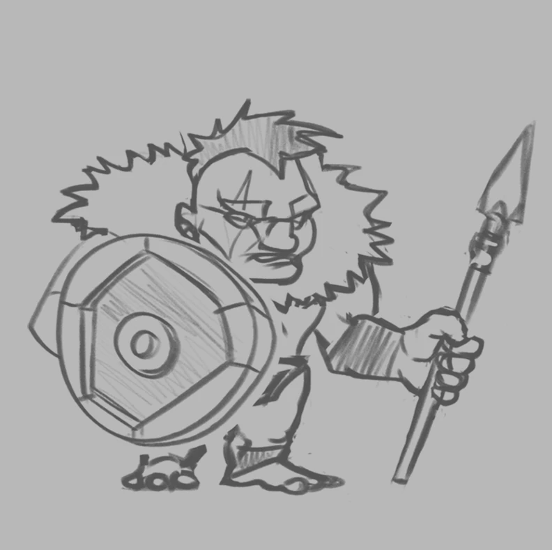
01Koncept
Szkic ustala sylwetkę, proporcje i czytelność w skali rozgrywki. Na tym etapie powstaje charakter i rola postaci.
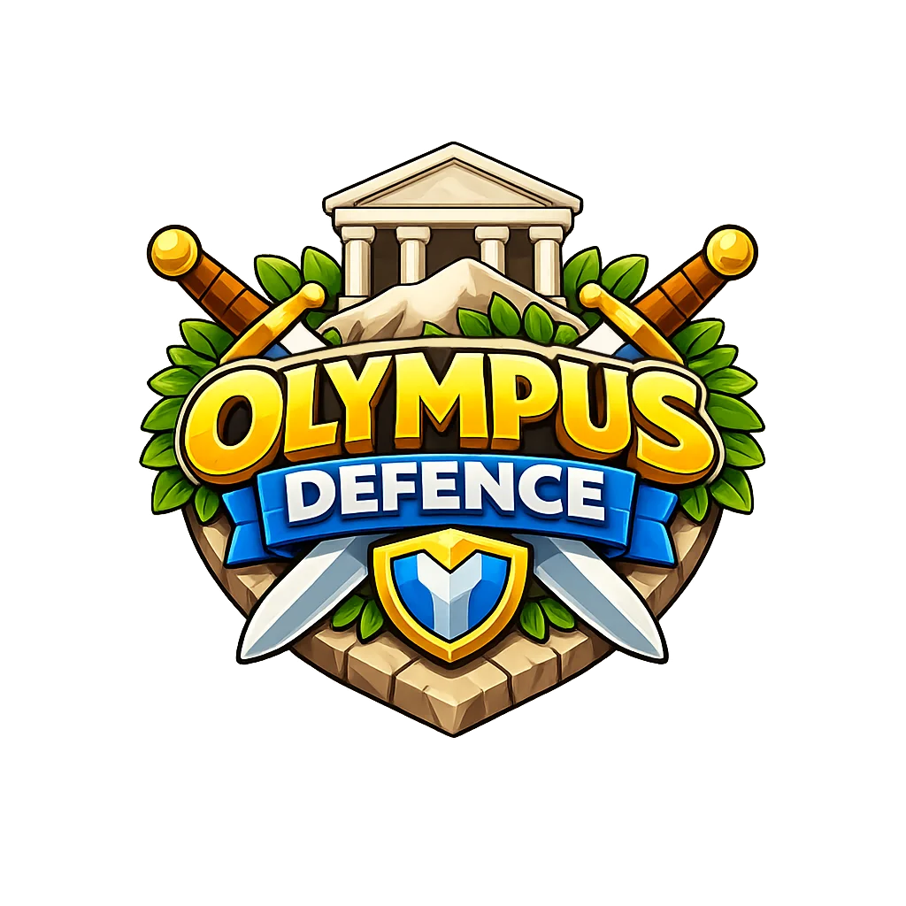
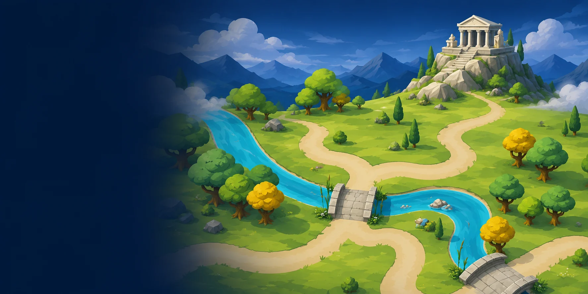
Trzy lata pracy nad postaciami, wieżami, środowiskami, VFX i UI — od pierwszych szkiców po assety wdrożone w Unity.
Postacie, wieże, środowiska, efekty i UI w jednym zakresie odpowiedzialności.
Zadanie brzmiało jasno: zdefiniować wysokiej jakości język casual cartoon i przenieść go na każdy element gry. Wspólny sposób budowania sylwetki, miękkość formy i czytelność koloru stały się regułą produkcyjną. Dzięki temu 45 map, 36 modeli wież i 21 postaci tworzy jedną spójną grę.
Konsekwentne rozwijanie tego kierunku rozszerzało mój warsztat: od modeli 3D, przez VFX i compositing, po UI/UX oraz prowadzenie kierunku wizualnego. Produkcja zakończyła się przed premierą, a projekt pozostał zapisem mojej wszechstronności — tworzyłem pełną oprawę wizualną gry tower defence.
Każda postać przechodziła przez pełny proces produkcyjny: koncept, modelowanie, rigowanie, animację, render i compositing.

01Szkic ustala sylwetkę, proporcje i czytelność w skali rozgrywki. Na tym etapie powstaje charakter i rola postaci.
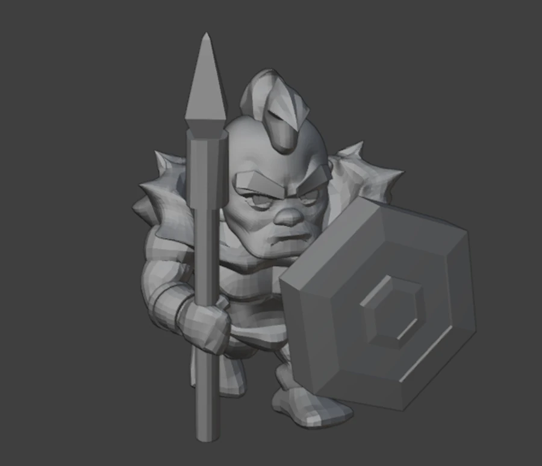
02Koncept przechodzi w model z czystą topologią i formą przygotowaną do dalszej produkcji w Blenderze.
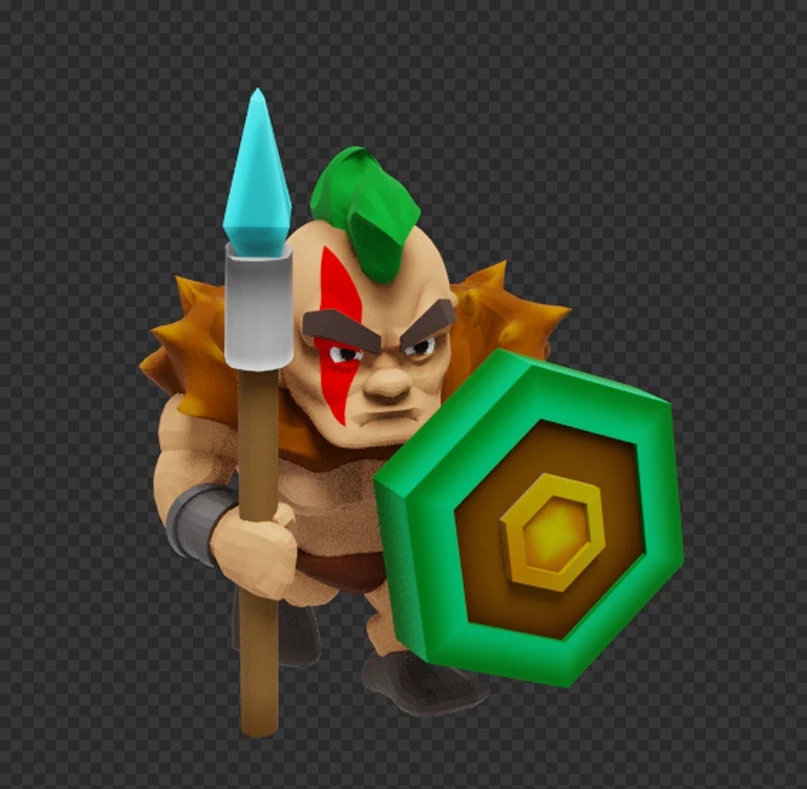
03Kolor, materiały i rig nadają postaci docelowy wygląd oraz przygotowują ją do animacji.
Animacja i compositing w Spine oraz Blenderze tworzą sprite'y gotowe do wdrożenia w Unity.
Dwanaście rodzin wież otrzymało po trzy poziomy ulepszeń. Każdy kolejny model rozwija sylwetkę, skalę i efekty, pokazując wzrost siły bezpośrednio na mapie.
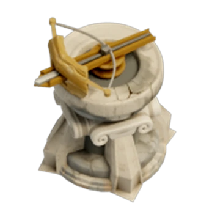
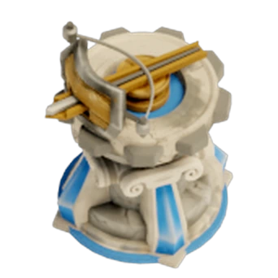
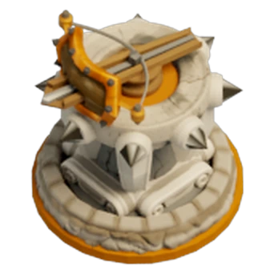
Dla każdej broni opracowywałem osobną koncepcję efektu i prowadziłem jej produkcję. Rendery, symulacje, tekstury oraz elementy rysowane ręcznie łączyłem w compositingu w jedną sekwencję. 21-klatkowy pocisk Burning Oil powstał z warstw ognia, dymu, iskier i światła.
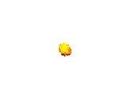
Każdy rodzaj broni otrzymał własny cykl ataku. Tempo, przygotowanie ruchu i moment trafienia budują odrębną tożsamość łuczników, Burning Oil oraz Zeusa.
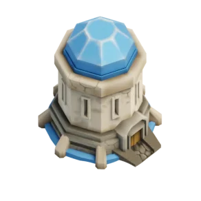
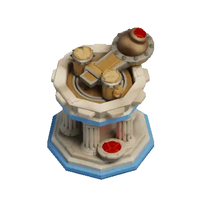
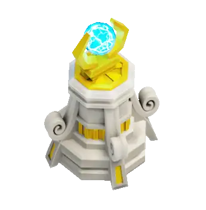
Dedykowane palety, reguły terenu i zestawy modeli nadają każdemu światu własną tożsamość. Produkcję przyspieszały generatory powtarzalnych elementów: ścieżki oparte na Geometry Nodes, system skał i kamieni oraz zestaw pędzli do terenów zielonych. Każda scena była następnie składana w compositingu i przygotowywana pod Unity.
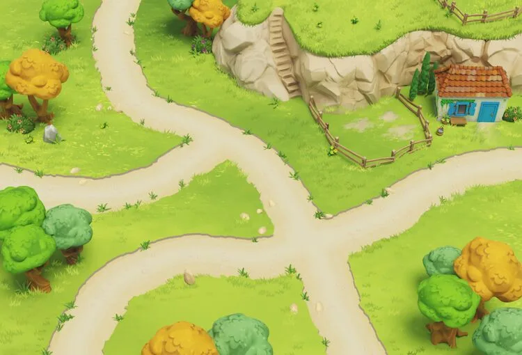
Świat 01 / Dolina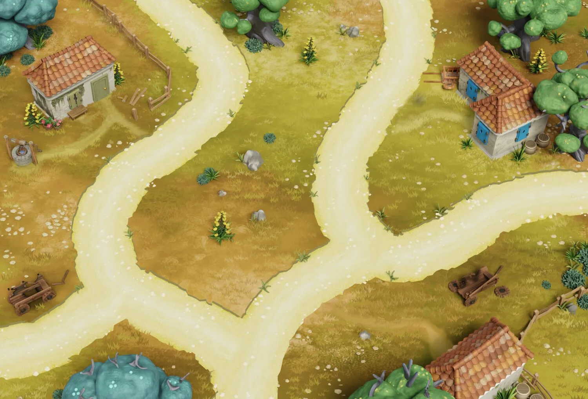
Świat 02 / Wioska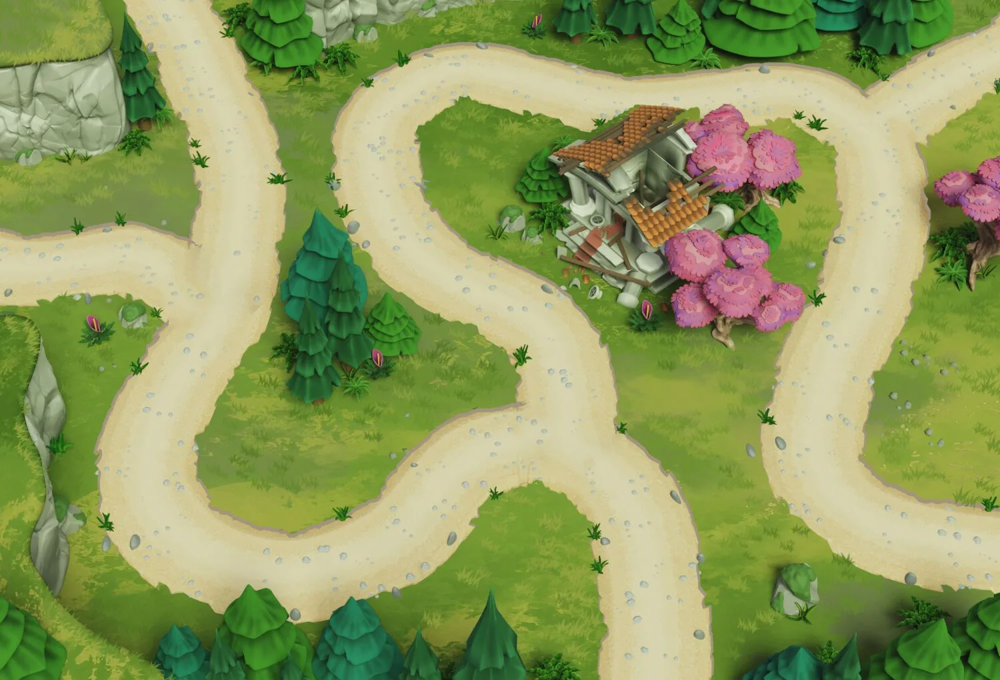
Świat 03 / RuinyModułowe elementy architektury, obiekty i materiały przyspieszały produkcję poziomów. Wspólna skala oraz motywy wizualne łączyły każdą lokację z mitologią Olimpu.
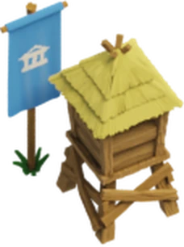
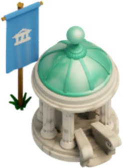
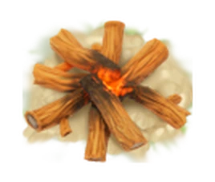
Od pierwszych makiet w Figmie po finalne ekrany w Unity układ, hierarchia i charakter gry powstawały równolegle. Redukowałem treść do informacji potrzebnych w danym momencie, a formą, kolorem i ruchem prowadziłem gracza bezpośrednio do właściwej funkcji.
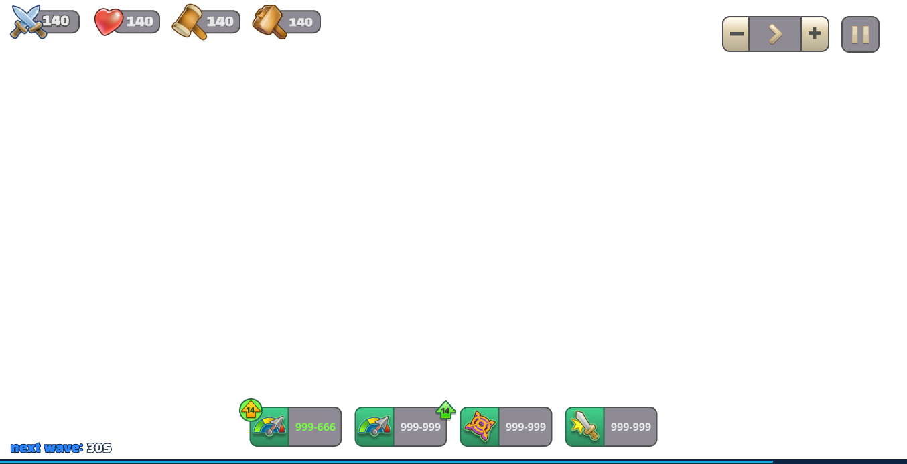
Każdy element interfejsu ma własną animację reakcji. Kliknij sakiewkę, aby zobaczyć jedną z nich.
Interfejs pokazany w kontekście, w którym gracz rzeczywiście z niego korzysta.Animacja: elementy składają się przy wejściu
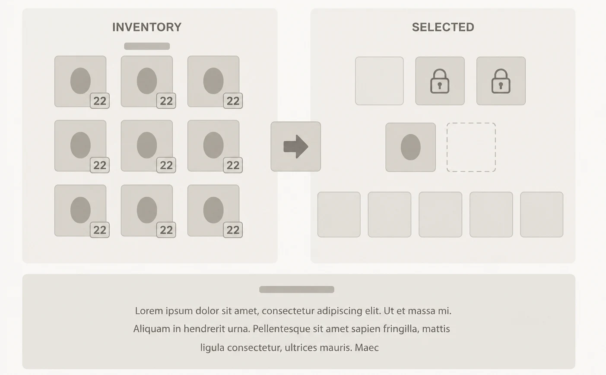
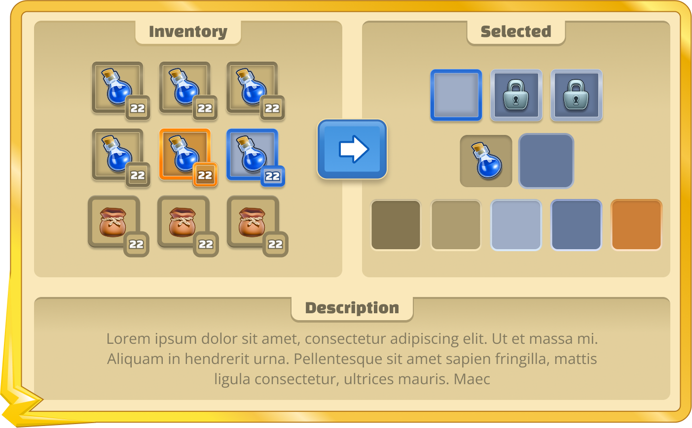
Wireframe ustala kolejność informacji, a finalna warstwa nadaje jej charakter Olimpu.
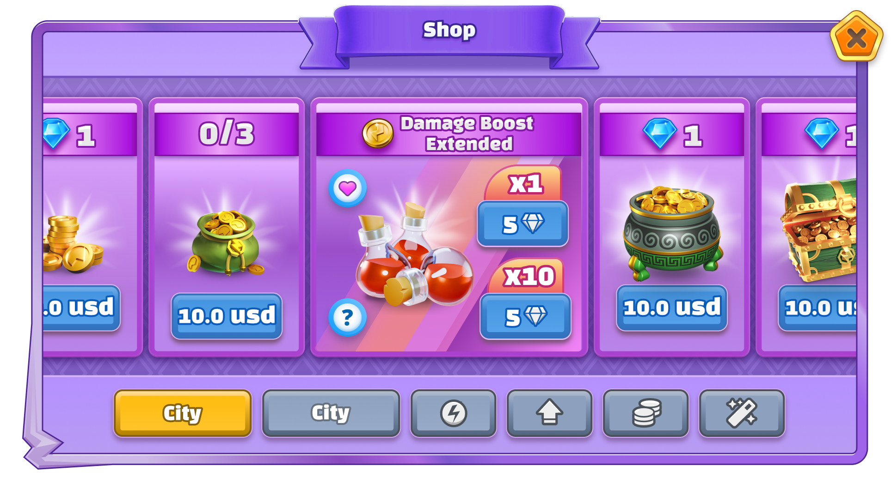
Oferta, zasoby i kategorie pozostają czytelne w jednym układzie.
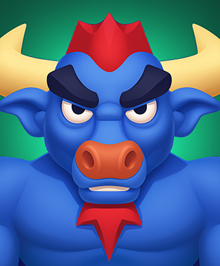
Masa, rogi i chłodna paleta budują jednostkę o dużej sile.
Na tym etapie wykorzystałem AI do generowania portretów, opierając je na jednostkach zbudowanych wcześniej w projekcie. Referencją były gotowe modele, sylwetki i palety, a każdy wynik przechodził przez moją selekcję i korektę, dzięki czemu seria pozostała w języku wizualnym gry.
Wspólny kadr, światło i poziom uproszczenia łączą serię, a sylwetka, oczy i kolor przekazują temperament od pierwszego spojrzenia.Interakcja: wybór portretu
Postacie, wieże i animowane obiekty przechodziły przez wspólną ścieżkę produkcyjną. Koncept, modelowanie, rigowanie, animacja i compositing prowadziły do assetów wdrażanych w Unity.
Równolegle z plikami budowałem dokumentację opisującą niuanse każdego elementu: użyte moduły, ustawienia materiałów i shaderów, warstwy compositingu, budowę riga oraz kluczowe klatki animacji.
Powrót do assetu po miesiącach zajmował minuty, a każda osoba w zespole mogła go edytować z zachowaniem kierunku wizualnego.
Olympus Defence łączył prowadzenie kierunku artystycznego z codzienną produkcją assetów. Praca nad 3D, VFX, compositingiem, UI/UX i wdrożeniem w Unity zbudowała mój sposób tworzenia spójnej oprawy gry.